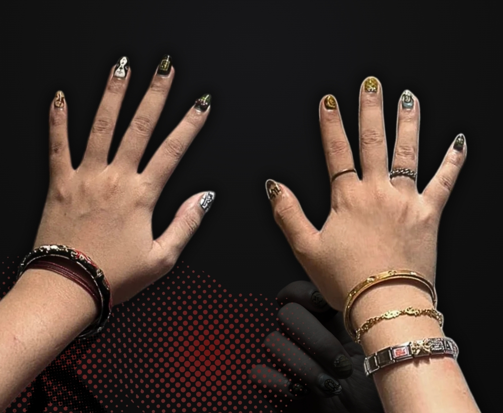

WELCOME
to
OUR STORE!
HOW TO ORDER
STEP 1
FIND YOUR FAVORITE NAIL DESIGN INSPO!
STEP 2
SLIDE INTO NOCTURNE'S WHATSAPP DMs AND TELL US ALL ABOUT YOUR VISION.

STEP 3
We'll give you a quotation for your design. Once the deposit is sorted, just sit back, relax, and get ready for your gorgeous new nails!